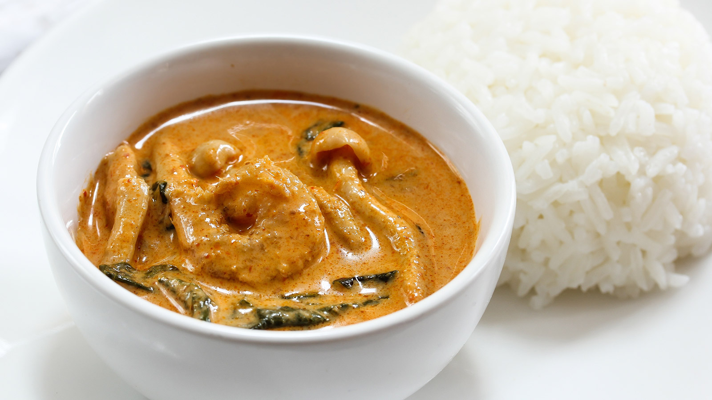

Goan fish curry or the Xitti Kodi is the staple diet of every Goan making it a famous food of Goa. The Goan fish curry is loaded with various spices along with coconut. Raw mango is also used to give the dish a tangy flavour. The main ingredients of the dish are a decent-sized Pomfret and raw mango. Instead of Pomfret, Kingfish may also be used. This Goan dish is served along with rice.
Read
C
02
SORPOTEL
'Soro' is a Konkani word that translates to alcohol or liquor. Sorpotel (also known as sarapatel) is a famous food of Goa. Pork and beef or mutton liver are used for this dish. The meat is parboiled and the fat is fried. Onions, garlic and the masala prepared are added along with other spices and herbs. Sorpotel can be consumed any time of the day, however, some people prefer it to have it for breakfast.
Read
C
03
SAMRACHI KODI
Samarachi Kodi is a dish prepared during the monsoons. It is a dry prawn curry. Dry prawns, onion, coconut, tamarind and tomatoes are the main ingredients which a friend with a spicy, tangy masala. Coconut milk is added to give it the typical flavour and texture. Some also use Bombay ducks instead of prawns. Samarachi Kodi is served best with hot rice and pickle.
Read
C

04
PRAWNS XEQUE XEQUE
Prawns Xeque Xeque is a classic Goan dish of prawns, coconut milk, tomatoes, green chillies and onions. The masala is mixed with prawns and added to sauteed onions, garlic and tomatoes. The coconut milk is added gradually. This Goan dish can be accompanied with Sannas, dosas or fugias.
Read
C
05
BEBINCA
This delicious Goan dessert is carefully layered to perfection. It is prepared using coconut milk, eggs, butter, and most importantly, jaggery. Traditional Bebinca has about seven to sixteen layers but you can have as many as you wish. Each bite of this cake makes the next one seem even more exciting.